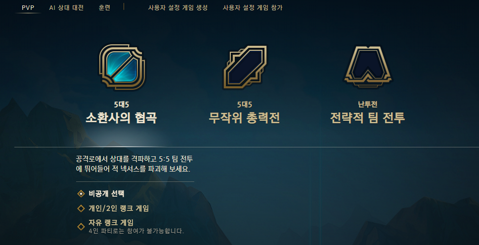
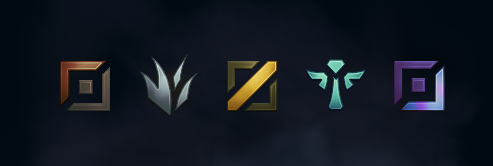
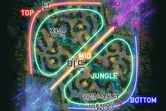
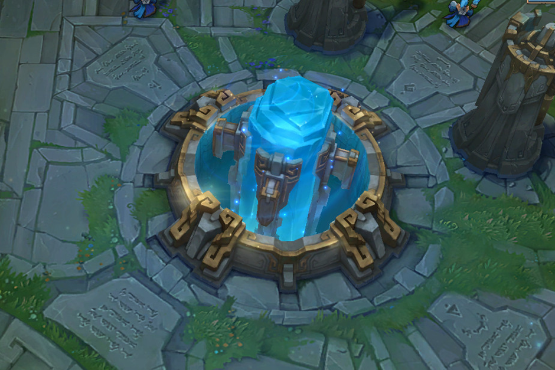
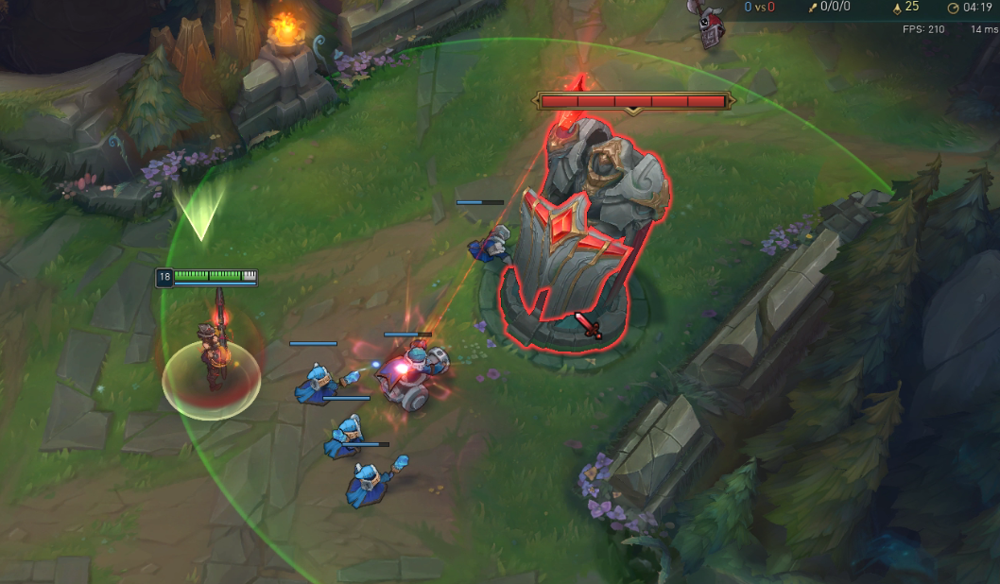
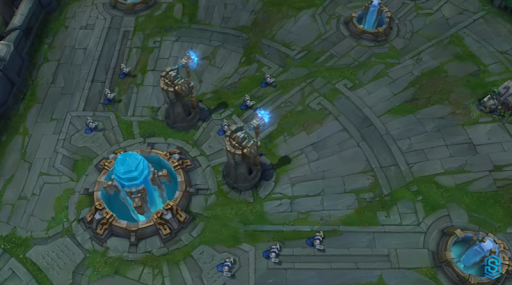
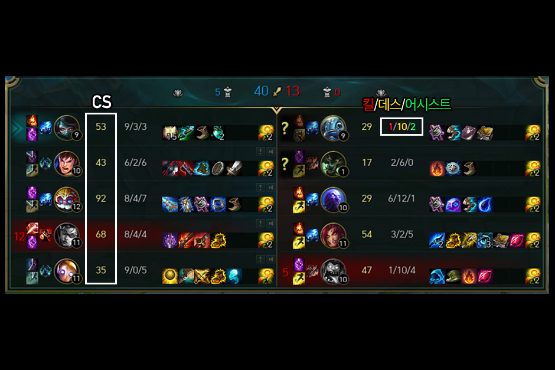

League of Legends

리그 오브 레전드는 2011년12월4일 출시된 게임입니다.(한국기준) 게임을 즐기는 플레이어는 '소환사' 라고 부르며 이 소환사가 조작하는 캐릭터를 '챔피언' 이라고 부릅니다.
게임 모드
게임모드는 PVP, AI 상대 대전, 훈련, 사용자 설정 게임 등이 있습니다. 대다수의 사람들이 즐겨하는 PVP중에서 '비공개 선택'(일반 게임)은 '티어'에 관계없이 게임을 즐길 수 있습니다. '개인/2인 랭크 게임'은 흔히 솔랭이라고 부르는데 이는 혼자서 랭크 게임을 플레이하거나 1명을 추가해서 2명이서 즐길 수 있는 랭크 게임입니다. 랭크 게임의 경우 본인의 실력의 척도를 시각화시킨 '티어' 라는 계급을 바탕으로 티어가 비슷한 사람들끼리 모여서 게임을 플레이 하기 때문에 본인의 실력의 위치를 알수있고 또한 비슷한 실력을 가진 플레이어들 끼리 게임을 하다보니까 가장 사람들이 많이 플레이합니다. '자유 랭크 게임'의 경우 플레이어 4명이 같이 모여서 파티를 결성해 게임을 돌리는 경우를 제외하고는 인원수의 제약이 없습니다. 마찬가지로 랭크 게임이기에 자유 랭크티어가 비슷한 플레이어들끼리 모입니다. 단,개인/2인 랭크 게임의 티어와 자유 랭크 게임의 티어는 다릅니다. 위의 '비공개 선택', '개인/2인 랭크 게임', '자유 랭크 게임'은 모두 소환사의 협곡에서 플레이합니다.
AI 상대 대전의 경우 AI플레이어와 소환사와 대전하는것을 말하는데 AI플레이어의 난이도는 초급, 중급으로 나뉘어져 있습니다. 리그 오브 레전드를 처음 플레이 하시는 분들의 경우 AI 상대 대전으로 기본적인 게임흐름을 이해하고 게임플레이에 있어서 감을 잡으시는데 도움이 됩니다.
훈련에는 튜토리얼과 연습모드가 있습니다. 튜토리얼은 게임을 처음 시작하실때 룰을 설명받으실 수 있고, 연습모드에서는 임의로 스킬재사용대기시간을 0으로 만들어서 스킬을 쿨타임 없이 계속사용하실 수 있고 스킬콤보를 연습하실수 있습니다. 이밖에도 '연습'을 하기위한 여러 기능들이 있어서 혼자서 연습하기에 알맞은 모드입니다.
사용자 설정 게임은 특정 유저들끼리 모여서 게임을 할 수 있고 AI를 임의로 채워서 게임을 할 수 있는 말 그대로 사용자가 임의로 설정이 가능한 게임입니다. 주로 아는사람들끼리 5vs5로 게임할때 이용합니다.
포지션 기본 설명
리그 오브 레전드에는 5가지의 포지션이 있는데 사진속에서 왼쪽부터 탑, 정글. 미드. 서포터. 원거리딜러로 불립니다. 포지션은 일반게임의 경우는 5인1팀이 구성된 이후에 유저들끼리 선착순 채팅으로 포지션을 정하는 반면, 랭크 게임의 경우에는 팀 결성 이전에 미리 원하는 포지션 2개정도를 미리 골라놓을 수 있기 때문에 본인이 자신있는 포지션을 플레이 할 수 있습니다.
위 사진은 정말 기본적인 포지션별 기본적인 활동범위를 나타낸 공격로 입니다. 이는 절대적인 지표가 아니며 게임을 플레이하면서 언제든지 유동적으로 변할 수 있으나, 정말 가장 기본적으로 게임 시작하고나서 15분정도까지는 위 사진의 범위내에서 활동한다고 보면 됩니다.
게임 이해
소환사의 협곡에서 게임을 승리하기 위해서는 위의 사진에 나와있는 각 진영의 가장 안쪽에 위치한 '넥서스'를 깨뜨리면 되는 게임입니다. 결국 게임의 궁극적 목적은 상대의 넥서스를 부숴서 게임에서 승리하는것인데 이는 상대팀또한 마찬가지이며 서로의 넥서스를 부수기위해 성장을 하는것이고 싸움에서 승리해서 각 구조물들을 하나씩 부숴가며 최종적으로 넥서스까지 도달하는겁니다.
게임을 플레이하면서 가장 먼저 마주치는것이 이 '포탑'입니다. 포탑은 각 공격로별로 3개가 존재하며 이를 각각 1차포탑, 2차포탑, 3차포탑이라고 부릅니다. 포탑은 공격기능이 있어서 포탑의 공격사정거리 내에 위치하면 포탑이 직접 공격합니다. 포탑의 공격은 매우 강력하여 위협적입니다. 그렇기에 사진속에 보이는 '미니언'과 함께 움직여서 포탑이 미니언을 공격하는동안 플레이어는 포탑을 공격해야합니다. 또한 포탑은 공격만 강한것이 아니라 방어력도 매우 높으므로 상대팀의 미니언을 잡아서 얻게되는 경험치와 골드로 각각 레벨업을해서 성장하고, 아군진영의 상점에서 골드를 지불하고 얻는 아이템으로 강해진다음에 포탑을 철거하는것이 일반적입니다. 그리고 포탑의 공격사정거리 내에서 포탑이 미니언을 공격하고있다고 하여 안심하고 상대 챔피언을 공격하면 포탑은 미니언공격하던것을 멈추고 즉시 플레이어를 공격하므로 조심해야합니다.
사진속에서 좌측하단은 넥서스이고 이를 수호하는 두개의 포탑을 '쌍둥이 포탑'이라고 하며 우측, 우측상단, 좌측상단에 아주살짝 보이는 구조물들이 '억제기'입니다. 억제기는 3차포탑까지 다 철거하고 나면 도달할 수 있는 구조물로서 각 공격로마다 1개씩 총 3개가 존재하며 한번 부수면 재생되지 않는 포탑과는 달리 억제기는 부숴지면 일정시간이 지난 후에 다시 생성됩니다. 억제기를 부수는데 성공하면 아군팀의 미니언들중 '슈퍼 미니언'이라고하는 높은 공격력과 높은 방어력을 지닌 미니언이 다음 억제기가 생성되기전까지 지속적으로 생성됩니다. 슈퍼 미니언은 전략적으로 아주 유리하게 게임을 이끌 수 있는 존재이기 때문에 억제기는 매우 중요한 구조물 입니다.
포지션 상세 설명
앞서 설명드린 포탑철거와 억제기부수기 등을 하려면 각 공격로의 5명의 소환사들이 성장을 잘 해야하는것은 필수입니다. 왜냐하면 상대방도 게임을 지고싶지 않기 때문에 필사적으로 저항을 할 것이기 때문입니다. 이때 게임을 보다 효율적으로 이기기 위해서 각 포지션별로 역할을 나눕니다.
탑
탑을 가는 챔피언의 경우 다른 포지션의 챔피언들은 다른 포지션의 챔피언들보다 공격력, 방어력, 마법저항력, 보유체력 등의 기본 스탯이 좋습니다. 그 이유는 탑챔피언의 경우 대다수가 공격력, 주문력 아이템만 올리는것이 아닌 공격력과 체력을(혹은 주문력과 체력을) 같이올려주는 아이템 또는 방어력과 체력을(혹은 마법저항력과 체력을) 올려주는 아이템을 구매하여 내가 딜을넣는것이 아닌 아군 딜러들을 보호하거나 상대 딜러에게 들러붙어서 상대 딜러를 방해하는것이 주 역할이기 때문입니다.
정글
정글유저를 흔히 '정글러' 라고 합니다. 정글러들은 공격로의 미니언을 잡아서 성장하는 것이 아닌 정글의 몬스터들을 잡아서 성장합니다. 정글 몬스터들은 죽고나면 다음 생성까지 시간이 걸립니다. 그중에는 정글 몬스터를 잡은사람에게 게임플레이에 도움이 되는 버프를 주는 몬스터도 있고 위험하고 강력하지만 아군전체에게 도움이 되는 버프를 주는 몬스터도있고 몬스터 처치후 1회에한해 소환하는대신 상대 포탑에게 막대한 피해를 줄수있는 정글 몬스터도 있기에 게임을 풀어나감에 있어서 매우 중요한 역할을 담당하고 있습니다. 정글 몬스터만 잡는것이 아니라 공격로에 지원을 가서 상대팀 챔피언을 잡아서 아군 챔피언의 성장을 돕는 게임을 돕는 역할로도 볼 수 있습니다. 주문력을 바탕으로 하는 챔피언과 공격력을 바탕으로 하는 챔피언 상관없이 정글 몬스터를 빠르게잡거나 상대팀을 못움직이게 하는 CC기가 있어서 공격로 지원갈때 매우 유리한 챔피언들이 주로 소환사의 선택을 받습니다.
미드
맵 정 중앙에 공격로가 위치해 있어서 미니언을 빠르게 잡고 탑, 바텀으로 지원을 빠르게 갈수도 있고 아군 정글러와 함께 상대 정글로 들어가서 상대 정글러를 잡음으로써 상대 정글러를 말리게 할수도 있는 전략적 요충지입니다. 메인딜러 역할을 맡고있으며 미드에 주로 가는 챔피언들은 주문력을 바탕으로 강력한 스킬을 기반으로하여 시간이 지나 게임이 후반으로 가면 갈수록 상대에게 위협이 되는 마법사, 공격력을 바탕으로 게임이 후반으로 갈수록 점점 위협도는 떨어지지만 초중반에 매우위협적이고 상대 메인딜러를 빠르게 잡을 수 있는 암살자챔피언이 주로 갑니다. 혹은 아예 탑, 바텀에 상대 미드보다 빠르게 지원가는데에 특화된 챔피언도 미드에 가곤합니다.
원거리딜러
줄여서 '원딜'이라고도 부릅니다. 수비적인 아이템은 지양하며 공격력과 공격속도, 치명타확률, 치명타데미지를 증가시켜주는 아이템을 구매해서 상대팀의 딜러, 탱커상관없이 공격해야하고 끝까지 살아남아서 딜을 잘 넣는것이 중요한, 미드와 함께 메인딜러의 역할을 맡고있는 포지션입니다. 게임 초반에 매우 존재감이 없을정도로 약하지만 게임이 오래될수록 원딜이 잘해야 게임을 이길정도로 승리 기여도가 높은 포지션인데, 그 이유는 같은 메인딜러인 미드의 경우 암살자, 마법사 둘다 스킬을 기반으로 공격하기에 스킬재사용대기시간이 있으나 원딜의 경우 기본공격(흔히 평타라고 부름)이 딜의 핵심이기에 끊임없이 강하고 지속적인 딜을 넣을수 있는 장점이 있기 때문입니다. 이러한 이유로 아군팀원들의 절대적인 보호와 게임 중반부터 빠른 성장을 위한 미니언, 정글 몬스터 몰아주기, 상대팀원들의 집중마크를 받는 매우 부담될 수 있는 포지션이기도 합니다.
서포터
원딜과 함께 바텀을 가는 포지션입니다. 앞서 설명했다시피 원딜은 후반에 존재감이 매우 강한것이지 초반에는 존재감이 없을정도로 약하기에 아군워딜의 성장을 돕기위해 미니언을 잡지 않고도(원딜이 다 잡기 때문)골드를 획득할 수 있는 아이템을 구매하며 거의 대부분 원딜과 함께 붙어다니는 말 그대로 서포터의 역할을 담당하고 있습니다. 서포터로 선택되는 챔피언들은 상대팀으로부터 아군 원딜을 보호하는데 특화되어있는 챔피언, 상대팀에게 CC기를 걸어서 게임을 유리하게 플레이 할 수 있게 만드는데 특화되어있는 챔피언, 힐과 보호막으로 상대의 공격을 무력화시키는데 특화되어있는 챔피언들이 있습니다.
성장
사진은 리그 오브 레전드의 점수판입니다. 점수판을 보기위해서는 게임 내에서 TAB키를 누르는 동안 나타나므로 볼때 눌렀다가 다봤으면 떼시면 됩니다. 아군의 성장은 미니언을 얼마만큼 처치했는지를 나타내주는 CS와 킬, 어시스트가 관여하며 상대의 성장역시 상대의 CS, 킬, 어시스트가 관여하나 상대의 킬, 어시스트는 곧 아군의 데스가 이기도 합니다.....(그만죽어 우리팀!!!!!) 단,여기서 서포터의 CS는 볼 필요가 없는데 이는 원딜에게 모두 양보하기 때문입니다.
정보탐색/나한테 맞는 챔피언 고르기
아마 리그 오브 레전드를 처음 접하는 분들의 경우 나한테 맞는 챔피언이 무엇인지 모르고 처음 보는 챔피언이 너무 많아서 상대의 스킬을 알지를 못하니 대처를 못해 답답하기도 합니다. 또한 이 챔피언은 어떤 아이템을 구매해야하며 어떤스탯(공격력인지, 주문력인지)을 올려주는 아이템을 구매해야하는지 모를 수 있습니다.(방어력과 마법저항력중에 고민이 되는 경우에는 상대 메인딜러중 성장을 잘한사람이 올린 스탯을 상쇄시켜주는 아이템을 구매하면됩니다. 공격력-방어력/주문력-마법저항력) 그래서 주변에 먼저 게임을 시작한 사람들에게 물어보면 정말 간략하게 알려주거나(그마저도 빠르게 설명하느라 다 못알아들음) "게임을 하다보면 자연스레 알 수 있어" 라는 대답을 하는 경우가 있는데 2020년6월달 기준으로 리그 오브 레전드의 챔피언은 148개입니다. 각 챔피언마다 패시브스킬1개와 액티브스킬4개 총5개인다 이걸 언제 다 경험할지 막막하기에

사진속 우측상단의 '컬렉션'을 눌러주면

'가장 인기 있는 포지션'을 선택하면 리그 오브 레전드에서 공식적으로 포지션별 가장 많이 선택된 챔피언들을 통계내서 나눈것도 볼 수 있고 또한 역할군도 확인할 수 있습니다. 그리고 챔피언의 초상화를 클릭하면 그 챔피언의 스킬들을 간략하게 영상으로 확인하실 수 있습니다. 그리고 마음에 드는 챔피언들을 몇개 골라보고 앞에 설명했던 연습모드를 이용해서 직접 스킬들을 사용해보고 일반게임에서 플레이 하다보면 나한테 맞는 챔피언이 무엇인지 찾으실 수 있을겁니다.